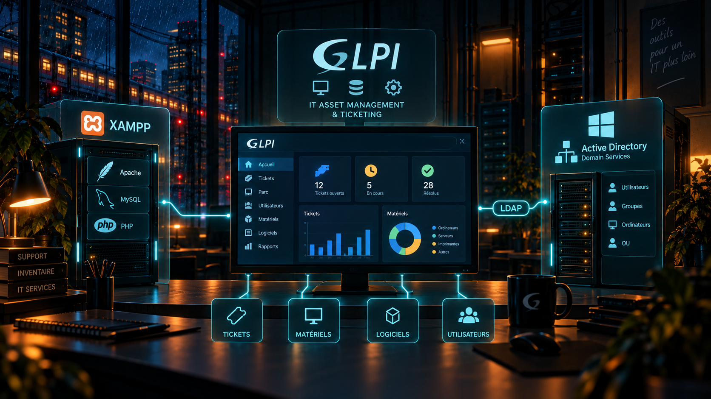

En clair
Qu'est-ce que c'est ?
GLPI est un outil de gestion de parc informatique et de support. Dans le projet DEVIDA, il est installé via XAMPP et relié à l'annuaire Active Directory.
Analogie simple : Pour quelqu'un qui ne connaît pas l'informatique, GLPI peut être vu comme un guichet de support et un inventaire informatique réunis dans une même application.
Utilité
À quoi ça sert ?
- Centraliser les informations liées au parc informatique.
- Disposer d'un outil de gestion et de support dans l'infrastructure de cours.
- Réutiliser les comptes du domaine grâce à la liaison LDAP.
DEVIDA
Ce que j'ai mis en place
- GLPI 10.0.16 installé via XAMPP.
- Docker/WSL2 ont été abandonnés dans ce projet car cette solution n'était pas compatible avec l'environnement utilisé.
- Synchronisation des comptes avec l'annuaire DEVIDA via LDAP.
Vocabulaire
Les mots techniques expliqués simplement
GLPI
Application web de gestion de parc et de support informatique.
Application web de gestion de parc et de support informatique.
XAMPP
Ensemble de composants permettant d'héberger localement une application web comme GLPI.
Ensemble de composants permettant d'héberger localement une application web comme GLPI.
LDAP
Protocole utilisé pour interroger un annuaire comme Active Directory.
Protocole utilisé pour interroger un annuaire comme Active Directory.
Annuaire
Base organisée contenant notamment les comptes utilisateurs et les groupes.
Base organisée contenant notamment les comptes utilisateurs et les groupes.